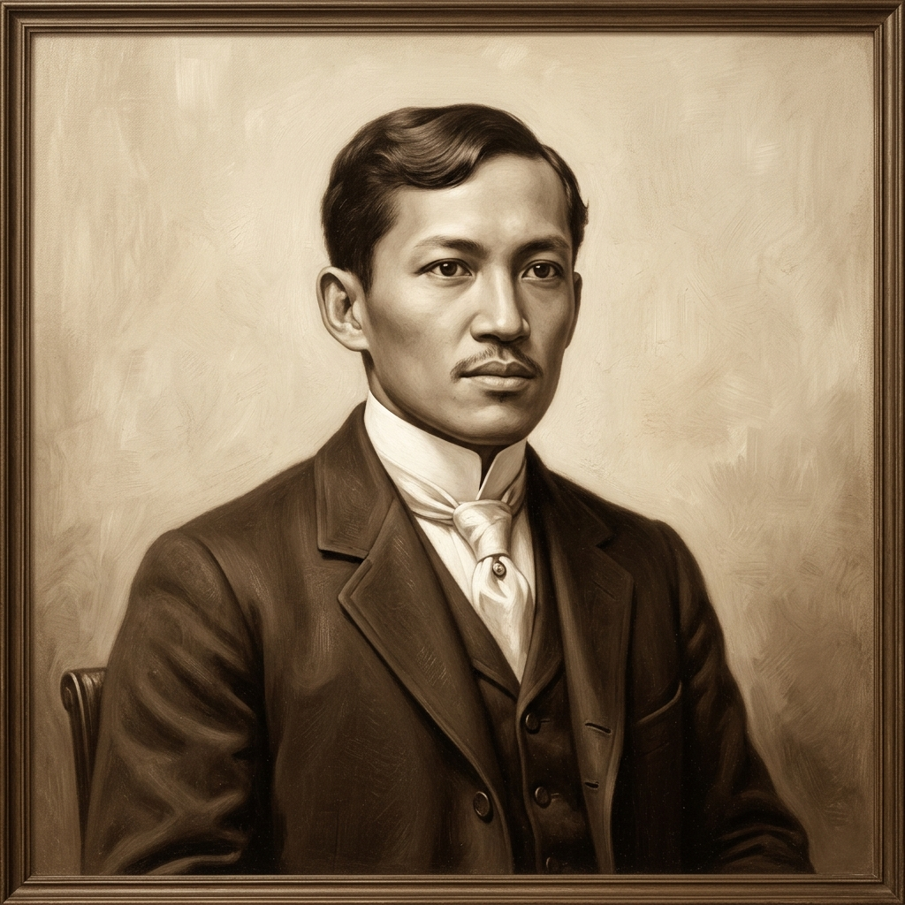
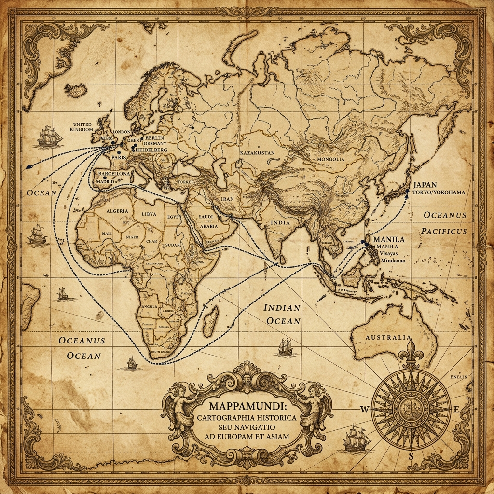
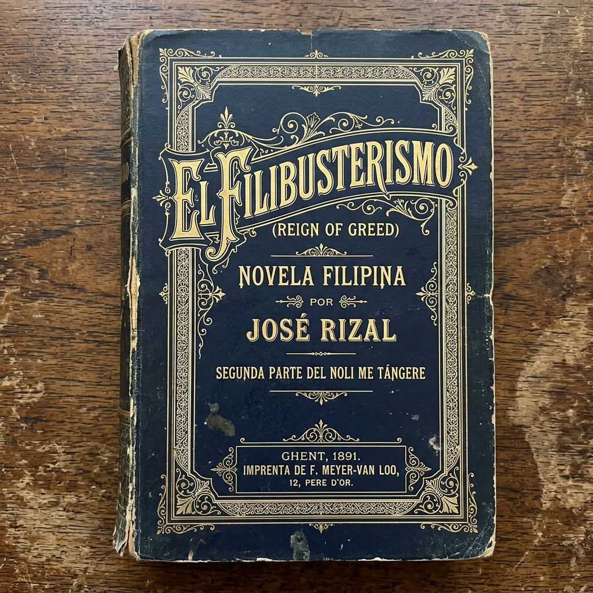
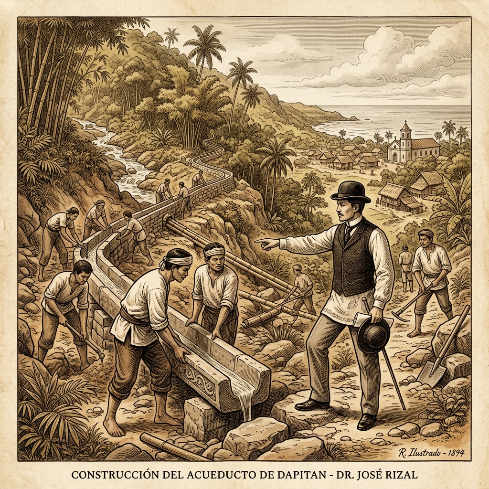
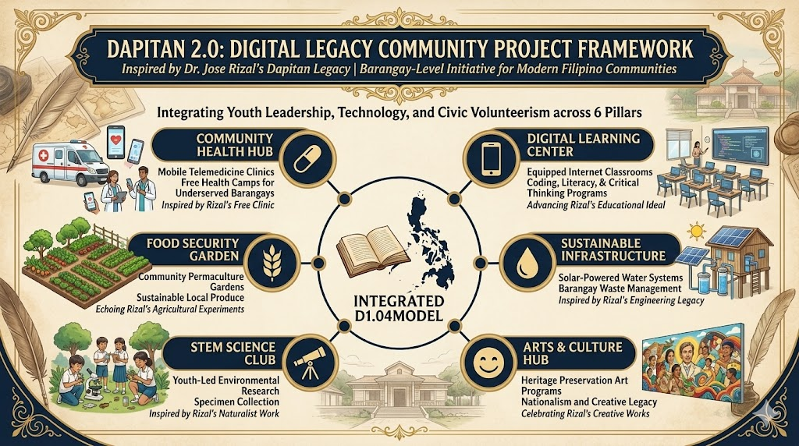
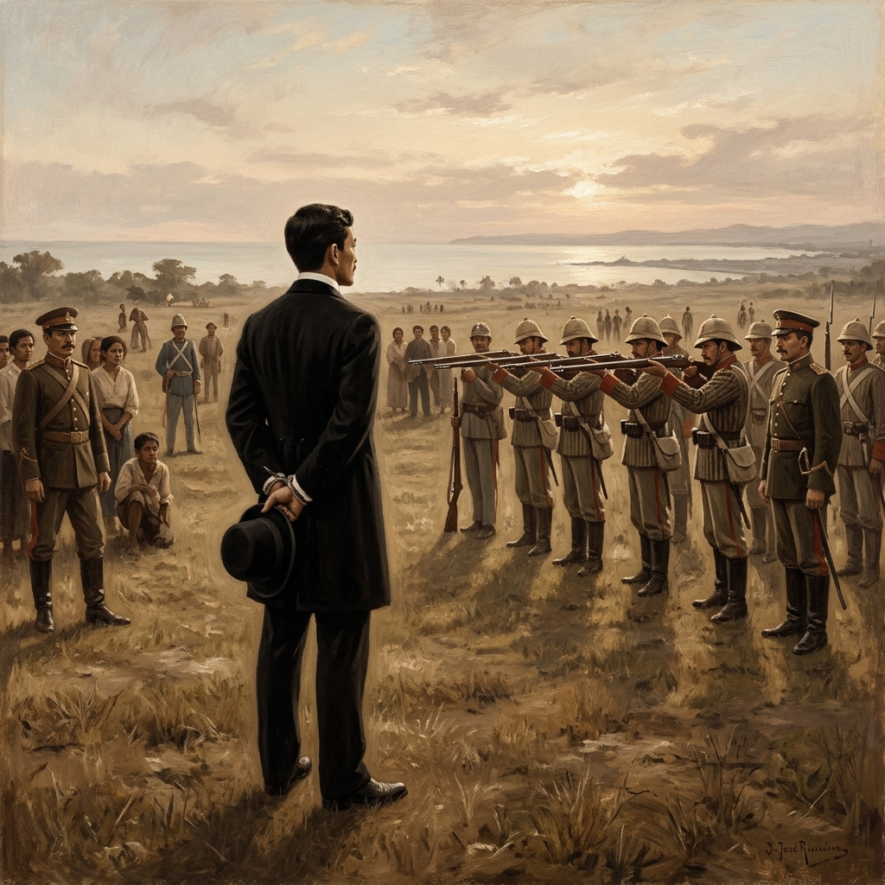
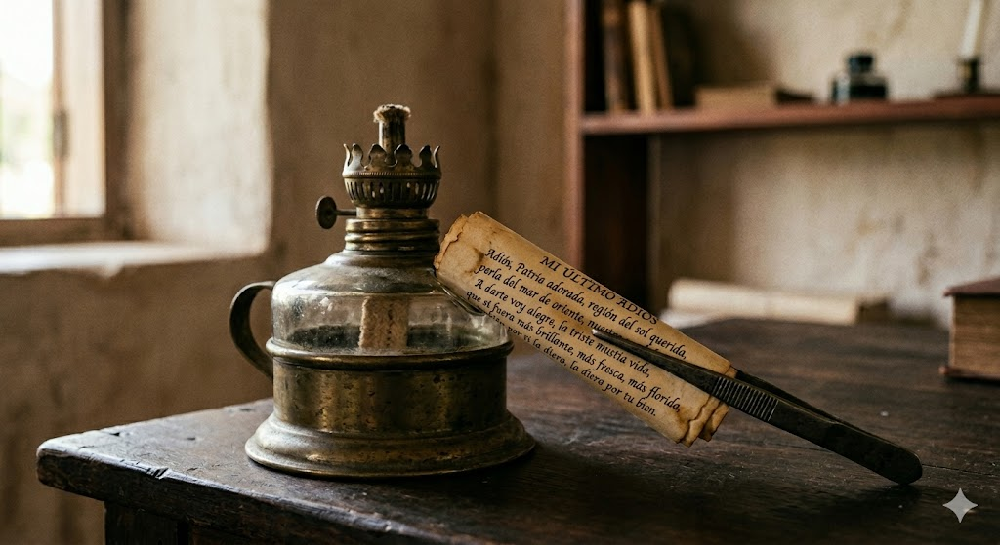

Dr. José P. Rizal : Life, Works & Legacy
Explore the biography, travels, and key milestones of the Philippines' foremost national hero whose pen sparked a revolution.

Dr. José P. Rizal
June 19, 1861 to December 30, 1896
- Full Name: José Protasio Rizal Mercado y Alonso Realonda
- Born: June 19, 1861 : Calamba, Laguna
- Died: December 30, 1896 : Bagumbayan (Luneta), Manila
- Professions: Writer, Poet, Ophthalmologist, Sculptor, Painter, Naturalist, Linguist
- Known For: Noli Me Tángere (1887) & El Filibusterismo (1891)
- Languages Spoken: Over 20 languages & dialects
Biographical Overview
José Protasio Rizal Mercado y Alonso Realonda was born on June 19, 1861 in Calamba, Laguna, as the seventh of eleven children of Francisco Mercado and Teodora Alonso. A child prodigy who could read and write by age five, Rizal would grow to become the Philippines' most celebrated intellectual : a polymath whose novels, poetry, and activism laid the ideological foundation of Philippine nationalism.
He completed his early education in Manila at Ateneo Municipal de Manila and Universidad de Santo Tomás before pursuing advanced studies across Europe : studying medicine, languages, philosophy, and the arts in Spain, France, Germany, and other nations. His two landmark novels, Noli Me Tángere (1887) and El Filibusterismo (1891), exposed the brutal realities of Spanish colonial rule and inflamed the consciousness of an oppressed people.
Rizal believed in peaceful reform rather than armed revolution. He founded the civic movement La Liga Filipina in 1892 and spent his years of exile in Dapitan transforming a remote provincial town into a model of education, healthcare, and engineering. Arrested on fabricated charges of sedition and rebellion, he was executed by firing squad on December 30, 1896 : a martyrdom that ignited the full force of the Philippine Revolution.
Key Milestones

Countries Visited
Rizal's travels across Europe and Asia were not mere journeys : they were a deliberate apprenticeship in medicine, arts, and political philosophy. Each country left an imprint on his worldview, equipping him with the intellectual arsenal to challenge colonial rule through the power of the written word.
The Philippines Through the Eyes of El Filibusterismo
Unmasking colonial injustice : and finding its mirror in the 21st-century Philippines.

Published in 1891 in Ghent, Belgium, El Filibusterismo (The Subversive) is the darker, more politically charged sequel to Noli Me Tángere. Narrated through the embittered revolutionary Simoun : the alias of Crisostomo Ibarra : the novel depicts a Philippines strangled by church authority, colonial bureaucracy, and moral bankruptcy.
Three Major Social Issues in El Filibusterismo
Rizal wielded the novel as both mirror and indictment, reflecting the social cancers of his era with surgical precision. These three issues resonate with devastating relevance today.
Corruption & Abuse of Power
Rizal exposed the systematic corruption embedded within the colonial government and the Catholic friary. Officials extorted taxes, falsified records, and exploited their positions for personal enrichment. Characters like Padre Salvi and the curate of San Diego represent the institutionalized moral decay that rendered justice meaningless for the poor.
Political corruption remains a defining crisis in the Philippines. From ghost projects in public works to health fund misappropriation (e.g., PhilHealth scandals), the systemic rot Rizal depicted continues to erode public trust in governance today.
Friar Abuse & Religious Hypocrisy
The religious orders : Dominicans, Augustinians, Franciscans : wielded enormous secular and spiritual power. Rizal depicted priests who manipulated confession, seized land through legal coercion, and used the pulpit to suppress dissent. Father Florentino's moral clarity stands in sharp contrast to the venality of his peers.
Contemporary cases of clerical abuse, misuse of church funds, and ecclesiastical influence over legislation (e.g., debates on the Reproductive Health Law) echo Rizal's critique of institutional religion wielding power beyond its spiritual mandate.
Lack of Access to Education
The colonial education system was designed to produce submissive subjects, not enlightened citizens. The University of Santo Tomás, dominated by friars, limited access to progressive knowledge. Rizal depicted students like Isagani who sought wisdom but were punished for questioning authority : a quiet crisis of suppressed intellect.
Millions of Filipino students still face inadequate facilities, under-resourced teachers, and high dropout rates. The digital divide exposed by pandemic learning revealed stark inequalities in educational access between urban and rural communities.
The Enduring Mirror
Over a century after Rizal penned El Filibusterismo, the Philippines finds itself wrestling with strikingly familiar demons. The novel functions not merely as a historical artefact but as a living diagnostic tool : a lens through which we can examine the persistent structural failures of governance, faith institutions, and educational access.
The tragedy is not that Rizal wrote about these problems. The tragedy is that they remain unresolved. However, embedded within his dark narrative is also a roadmap : a call to civic courage, critical thinking, and reformist action that speaks directly to the Filipino youth of the 21st century.
Modern Solutions Inspired by Rizal's Reformist Ideals
Strengthen Institutional Transparency & Accountability
Establish independent anti-corruption commissions with genuine prosecutorial power, bolstered by digital audit trails and mandatory public disclosure of government contracts : echoing Rizal's insistence that just governance requires visible accountability.
Universal, Equitable, and Critical Education
Invest in free, quality public education from primary through tertiary levels, with a Rizal-inspired curriculum that teaches critical thinking, civic duty, nationalism, and ethical leadership : not rote memorization and passive compliance.
Separation of Ecclesiastical & State Power
Reinforce constitutional provisions separating church and state; ensure that all legislation is grounded in evidence, human rights principles, and democratic representation : not religious doctrine : reflecting Rizal's belief in reason-guided governance.
Empower Civic Society & Youth Participation
Support grassroots advocacy organizations, youth-led movements, and community-based watchdog groups that hold institutions accountable : channelling Rizal's vision of an enlightened, organized citizenry as the true engine of national transformation.
Rizal in Exile, Rizal in Action : The Dapitan Years (1892 to 1896)
How a forced exile became the Philippines' first model of community development, civic leadership, and peaceful resistance.
Multi-Faceted Contributions in Dapitan
Banished to Dapitan, Zamboanga del Norte in 1892, Rizal refused to surrender to despair. Instead, he transformed his exile into a living laboratory of progress : becoming doctor, engineer, educator, scientist, and community organizer all at once.
Physician & Healer
Rizal opened a free clinic in Dapitan, performing complex surgeries : including cataract operations : for patients who could not afford care. He treated hundreds of Filipinos, earning the trust of the community through genuine compassion and scientific competence. He also conducted public health education, promoting sanitation and disease prevention.
Educator & School Founder
Rizal founded a school for boys in Dapitan, teaching subjects including Spanish, English, mathematics, geography, history, and natural sciences : without charging tuition fees. His pedagogy was progressive: he encouraged curiosity, hands-on learning, and moral formation alongside academic instruction.
Engineer & Infrastructure Builder
Rizal designed and built a functional waterworks system, channelling clean water from the mountains to supply the community. He also constructed drainage channels, improved local roads, and introduced modern agricultural techniques : demonstrating that development is possible even without state resources.
Naturalist & Scientist
Rizal conducted scientific research in Dapitan, collecting specimens of plants, insects, reptiles, and birds : several of which were later classified as new species bearing his name (e.g., Draco rizali, Apogonia rizali). He also crafted a large 3D relief map of Mindanao from clay and stones, demonstrating his cartographic genius.

Peaceful Resistance & Civic Engagement
Rizal's Dapitan years are a profound case study in what scholars today call "constructive resistance" : the strategy of countering oppression not through violence, but through the relentless building of a better alternative. By educating the young, healing the sick, engineering clean water, and cultivating scientific knowledge, Rizal demonstrated that the most radical act against a colonial system is to build institutions and communities the system refuses to provide.
His civic engagement was not passive. It was quietly defiant : a living rebuke to the colonial narrative that Filipinos were incapable of self-governance. Every student he taught, every surgery he performed, every pipe he laid for the waterworks was a declaration: We are capable. We are sovereign. We are building the nation ourselves.
21st-Century Community Development Project
Inspired by Rizal's Dapitan Legacy : A Proposal for Modern Filipino Communities
We propose a community development model called "Dapitan 2.0" : a replicable, barangay-level initiative that translates Rizal's four Dapitan contributions into 21st-century equivalents, leveraging technology, youth leadership, and civic volunteerism.
Community Health Hub
Mobile telemedicine clinics and free health camps for underserved barangays, inspired by Rizal's free clinic model.
Digital Learning Center
Equipped classrooms with internet access and volunteer-led coding, literacy, and critical thinking programs.
Sustainable Infrastructure
Solar-powered water filtration systems and waste management programs for communities without reliable utilities.
Food Security Garden
Community gardens using permaculture techniques : echoing Rizal's agricultural experiments in Dapitan.
STEM Science Club
Youth-led environmental research and documentation projects, inspired by Rizal's naturalist work and specimen collection.
Arts & Culture Hub
Community art programs that celebrate local heritage, nationalism, and the creative legacy of Rizal's sculpture and poetry.

Trial, Execution, and Martyrdom : The Price of Truth
How the Spanish colonial justice system condemned an innocent man : and how that condemnation ignited a revolution.
The False Charges Against Rizal
Following the outbreak of the Katipunan revolution in August 1896, Spanish authorities arrested Rizal in Barcelona while he was en route to Cuba as a military doctor. Despite having no direct role in the uprising, he was brought back to Manila and subjected to a military court martial under a framework designed to produce only one verdict.
Rebellion
Authorities alleged that Rizal incited armed insurrection through his writings and association with the Katipunan. In reality, Rizal had explicitly condemned premature revolution and urged peaceful reform as the path forward.
Sedition
The colonial government charged him with creating social disorder and inciting the public against the Spanish Crown through his novels and essays : treating literary criticism of injustice as criminal provocation.
Illegal Association
Rizal was accused of founding and leading the Katipunan : a charge that was demonstrably false. The Katipunan was founded by Andrés Bonifacio. Rizal had founded La Liga Filipina, a civic organization dissolved within days of its founding.
The Court Martial Trial
The trial took place on December 26, 1896, before a military council of seven Spanish officers. The proceedings were a legal fiction : the verdict had been predetermined. Rizal was denied the right to call witnesses in his defence, and the evidence presented consisted largely of his own published works, which the prosecution used out of context to paint him as a revolutionary agitator.
His defence attorney, Lieutenant Luis Taviel de Andrade, argued vigorously but futilely. Within hours, Rizal was pronounced guilty on all three counts and sentenced to death by firing squad. The speed of the proceeding itself was an indictment of colonial jurisprudence : justice was not its purpose; a lesson to would-be dissenters was.
On the morning of December 30, 1896, at Bagumbayan Field (now Luneta Park) in Manila, José Rizal : aged 35 : faced eight Filipino soldiers commanded by Spanish officers. He requested to be shot facing his executioners. That request was denied. He was shot in the back. As he fell, witnesses reported he turned his body so that he faced the sky : a final gesture of dignity that became legend.

Rizal's execution was a catastrophic miscalculation by the colonial government. Rather than silencing the nationalist movement, it gave it an unassailable martyr. His death transformed a political debate into a moral crusade : and a martyr's cause into a nation's founding myth.
From Martyrdom to Revolution : The Chain of Consequence
Unjust Trial
Dec. 26, 1896 : kangaroo court martial
Execution
Dec. 30, 1896 : Bagumbayan, Manila
National Outrage
Filipinos unite in grief & fury
Revolution Intensifies
Katipunan gains mass support
Philippine Independence
June 12, 1898 : Kawit, Cavite
The revolution that Rizal had counselled against in life became the revolution he enabled in death. His martyrdom stripped away any remaining colonial legitimacy in the eyes of the Filipino people. Bonifacio's Katipunan, already embattled, found new recruits and new moral purpose in the image of an unarmed intellectual shot in the back by an empire afraid of his words. The blood of Bagumbayan became the ink with which Philippine independence was eventually written.
Pearl of the Orient seas, our Eden lost!
Gladly now I go to give thee this faded life's best,
And were it brighter, fresher, or more blest,
Still would I give it thee, nor count the cost.
Others have given their lives, without doubt or heed;
The place ne'er matters when 'tis for home and right,
Death is welcome if for country we bleed.
Through the gloom of night, to herald the day;
And if color is lacking my blood thou shalt take,
Pour'd out at need for thy dear sake,
To dye with its crimson the waking ray.

Rizal as the Transcendental Hero : Timeless, Borderless, Eternal
Why a man executed in 1896 remains indispensable to the Filipino identity in the 21st century and beyond.
He was the greatest product of the Philippines and his coming to the world signified the advent of a new era for his people... Rizal belongs not only to the Philippines but to the whole world.: José Rizal's global legacy, recognized by scholars worldwide
Why Rizal Remains Timeless
In an era before mass media, Rizal demonstrated that a novel could topple an empire's moral authority. He proved that ideas, rigorously expressed and widely shared, are the most durable form of power. This remains profoundly relevant in the age of social media, where words can still ignite revolutions : or extinguish them.
Rizal was Filipino in soul but international in scope. He collaborated with European scholars, challenged racial hierarchies in colonial academia, and wrote in Spanish for a global audience. He is the archetype of what it means to be a citizen of the world who never forgets the land that formed them.
Rizal never compromised his beliefs for safety or comfort. He returned to the Philippines knowing the risks. He wrote what was true, even when truth was dangerous. In a culture plagued by political opportunism, his moral consistency is a radical act of leadership.
Rizal's insistence on peaceful reform : education, legal advocacy, civic organization, and the power of enlightened public opinion : offers a philosophical framework as relevant to non-violent movements today as it was to the ilustrado reformers of his era.
Rizal's Ideals Applied to Modern Filipino Life
His core values are not museum pieces. They are operational principles : a practical guide for modern Filipinos navigating education, governance, human rights, and global engagement.
Education
- Pursue learning not for status, but for service to the nation
- Advocate for inclusive, critical, and free public education
- Teach honesty, civic responsibility, and historical truth
- Empower educators as the nation's most critical institution
- Resist intellectual passivity and demand rigorous curricula
Governance
- Vote with conscience : not loyalty, money, or fear
- Hold public servants accountable through civic engagement
- Support transparent, merit-based government processes
- Participate in barangay democracy and community councils
- Champion the rule of law as the pillar of national dignity
Human Rights
- Defend the fundamental dignity of every person, regardless of status
- Speak out against extrajudicial violence and injustice
- Protect press freedom as the guardian of truth
- Advocate for the rights of indigenous peoples, women, and the poor
- Treat due process as sacred : not conditional on political expediency
Global Citizenship
- Represent the Philippines with excellence and integrity abroad
- Learn foreign cultures and languages as bridges, not replacements
- Engage in international scholarship, research, and diplomacy
- Channel global exposure back into national development
- Carry Rizal's example: be proudly Filipino in a borderless world
My Rizal Pledge & Reflections
Eight voices. One shared vision. How will we embody Rizal's values as students and future professionals?
Below are the individual reflections of our group of eight : each addressing how the ideals, sacrifices, and example of Dr. José Rizal will shape our own journeys as students, citizens, and future professionals of the Philippines.
Digap, Brix Clarence
[Leader & BSIT 2A]Lim, Giann Joelle
[Member & BSIT 2A]Calahi, Ron Christian
[Member & BSIT 2A]Sto. Tomas, Brent Moises
[Member & BSIT 2A]Gonzales, McSteven
[Member & BSIT 2A]Calipdan, Clarth Leenzchy
[Member & BSIT 2A]Pasion, Jess Marvin
[Member & BSIT 2A]Villaluz, Vladimir
[Member & BSIT 2A]Our Collective Pledge
We pledge to carry Rizal's torch : not as a relic of history, but as a living flame. Through our studies, our professions, and our citizenship, we commit to building the enlightened, just, and sovereign Philippines that he gave his life to imagine.
(full-width × 160px)
(full-width × 160px)
(full-width × 160px)
(full-width × 160px)
(full-width × 160px)
Acknowledgements
We extend our sincerest gratitude to our professor and institution for guiding us through the life and legacy of Dr. José Rizal. This exhibit is dedicated to every Filipino student who carries the torch of knowledge, integrity, and service : the values Rizal died for.